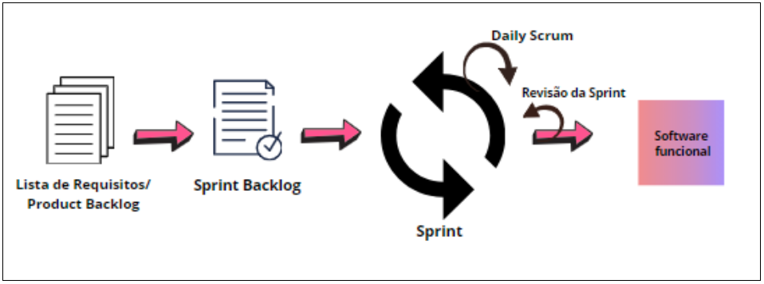
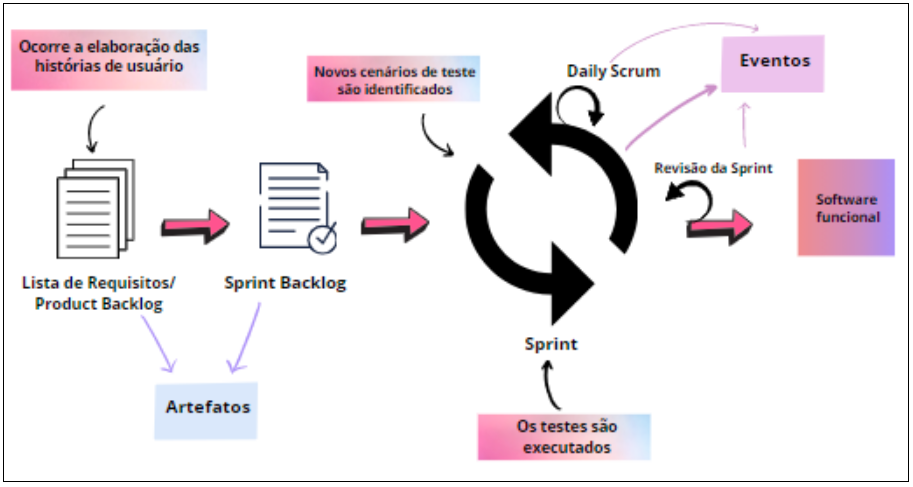

Estrutura Atual

Papéis
Os papéis da estrutura atual da fábrica são constituídos pelo Scrum Master (Gerente da Fábrica), Product Owner (PO) e pela equipe de desenvolvimento composta por dois membros.
DetalhesEventos
O processo Scrum é formado pelos seguintes eventos: Sprint, Daily Scrum e Revisão da Sprint.
DetalhesArtefatos
Na execução dos eventos do processo Scrum são elaborados os seguintes artefatos: Product Backlog e Sprint Backlog.
DetalhesModelo Proposto

Papéis
Não houve alteração nos papéis da estrutura da fábrica devido a redução da equipe. Os papéis são constituídos pelo Gerente, Product Owner (PO) e pela equipe de desenvolvimento composta por dois membros.
DetalhesEventos
O processo Scrum é formado pelos seguintes eventos: Sprint, Daily Scrum e Revisão da Sprint. Os eventos são uma forma utilizada de estabelecer uma rotina e cada evento é uma chance de verificar e melhorar o sistema.
DetalhesArtefatos
Na execução dos eventos do processo Scrum são elaborados os seguintes artefatos: Product Backlog e Sprint Backlog.
Detalhes